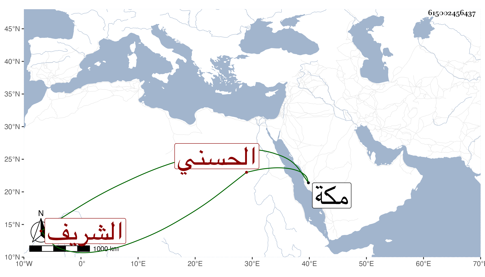

0902Sakhawi.DawLamic.ITO20230111-ara1.EIS1600.615002456437
Biography ID: 615002456437
539
فارس بن ميلب بن علي بن مبارك بن رميثة بن أبي نمي الشريف الحسني أمه فاطمة ابنة الشريف عنان بن مغامس بن رميثة . مات في رجب سنة ست وسبعين خارج مكة وحمل فدفن بها وكانت وفاة أمه في سنة ثمان عشرة بعد أن فارقها أبوه وتزوجها الشريف حسن بن عجلان وأولدها عليا . ذكره ابن فهد .
